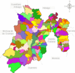

De: La Frikipedia, la enciclopedia extremadamente seria.
De: La Frikipedia, la enciclopedia extremadamente seria. De: La Frikipedia, la enciclopedia extremadamente seria.
| De la serie Países del planeta tierra: | |||||
| Estado de Mé | |||||
|---|---|---|---|---|---|
| |||||
| Lema: ¿Lema, que es eso? | |||||
| Himno: La cucaracha
| |||||
| 
Ahhh, que coloridos somos. | |||||
| Capital | Toluca | ||||
| Mayor ciudad | Tultitlán, el municipio mas | ||||
| Lenguas oficiales | Naco, fresa, cholo, y a veces español | ||||
| Gobierno | Pseudo-democracia | ||||
| Dictador en turno | Eruviel | ||||
| Área | México (¡¡¡Pero no somos chilangos!!!) | ||||
| Población | No se, pero si somos más que en cualquier otro estado | ||||
| Moneda | Cartón, dividido en Cahuamas | ||||
| Zona horaria | México + 0 (+ 1 + 2 + 3...) | ||||
| Dominio Internet | ¿Internet, que es eso?, aquí solo tenemos Fax | ||||
| Código telefónico | 1001001111010100 (Los teléfonos de aquí solo tienen dos dígitos)
| ||||
| ¡El mejor Chorizo del mundo! (y el único lugar donde se produce a gran escala) | |||||
«¡p$@% madre!, ya le dije que no soy chilango.»
~ Cualquier mexiquense de vacaciones en otro estado.
También llamado establo de México (tal vez por el olor), está será la futura capital de México, pues el D.F. ya esta bastante j&*&@$ como para seguir siendo la ciudad principal. Es uno de los 32 micropaíses que conforman el maravilloso imperio azteca mexicano. Es una de las 32 micronaciones que conforman al Imperio Mexicano.
Normalmente se cree que se enseña de la primaria, en raras ocasiones durante la secundaria.
Por ahí, cerca del centro... sí, por ahí, arriba del D.F., y entre un chingo de montañas.
El clima en general del estado es tropical seco desertico a 11ºC en toluca, al otro lado, en Texcoco, es templado humedo invernal a 35ºC, así de fijo; con lluvias tan escasas como en el amazonas, y tan abundantes como en el Sahara.
Aproximadamente ochorrocientasmil personas, es el estado más poblado del país, la mayoría pegados al Distrito Federal.
Una de las primeras ciudades en asentarse fue Teotihuacan, una de las ciudades más grandes e inútiles donde se construyeron algunas pirámides para hablar con sus dioses y con OVNIS.
Una vez muertos todos los mexicas a manos de Hernán Cortés, se proclamo al estado de méxico, y a todo México, como colonia de imperio espiñol.
Durante esta época, Toluca fue considerada como segunda capital (que le dije). Además de darse hechos como la batalla del monte de las cruces donde Hidalgo, en la zona de la marquesa, realiza un día de campo con sus amigos españoles combate al ejercito español. Posteriormente en Texcoco se firma el tratado donde el Estado de méxico se independizaria de españa (también de méxico, hay que recordar que es una micronación).
En realidad en estos 100 años no pasó nada, pues toda la historia se concentra en chilangolandia. En resumen, el estado de méxico es la bodega/refugio de la capital.
El Estado de México, al ser una micronación, se divide en aldeas, llamadas erroneamente municipios. De las 125 aldeas existentes, la capital es Toluca (¿No leíste la infobox?).
El presidente del Estado de México o dictador del 2011 al 2017 es Eruviel Chapitas Ávila (También conocido como la abuela de Heidi), enviado por las maliciosas y medioderechistas fuerzas del PRI, para controlar este sector de país, igual que su antecesor Enrique Peña Nena Nieto, hoy Vice-Come arroz Presidente de México.
El ministro vitalicio de Alimentación es Pancho Colate.
La población consta de 14 millones de seres, entre los que se encuentran, según estadisticas del gobierno de los Estados Unidos INEGI, 4 millones de hombres, 4.5 millones de mujeres, y los restantes 4.5 millones entre niñatos, ancianos y extraterrestres.
El estado de México tiene una gran variedad de religiones, y no hablo de cristianos, judíos ni nada similar, en este lugar, el furbo es considerado una religión, de entre los que destacan:
Autor(es):